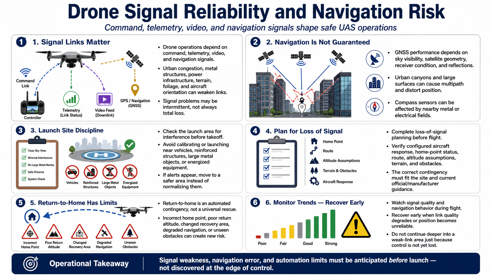

Radio, GPS, and Electromagnetic Conditions
Connecting to LMS... Progress: in progress

Narration
Drone operations depend on command, telemetry, video, and navigation signals. Urban radio congestion, metal structures, power infrastructure, terrain, foliage, and the aircraft's orientation can reduce link quality or create intermittent behavior.
Satellite-navigation performance depends on sky visibility, satellite geometry, receiver condition, and reflected signals. Urban canyons and large surfaces can create multipath, where delayed reflections distort position. Compass sensors can also be affected by nearby metal or electrical fields.
Check the launch area for interference and avoid calibrating or launching near vehicles, reinforced structures, large metal objects, or energized equipment when guidance warns against it. Move to a safer area rather than normalizing unexplained alerts.
Loss-of-signal planning must be completed before flight. Understand the aircraft's configured response, home-point status, route, altitude assumptions, terrain, and obstacles. The correct response differs by site and must fit current official and manufacturer guidance.
Return-to-home is an automated contingency, not a universal rescue. An incorrect home point, unsuitable return altitude, changed recovery area, degraded navigation, or obstacle outside sensor capability can create new risk.
Monitor signal trends and navigation behavior during flight. Recover early when quality degrades or position becomes unreliable. Do not continue deeper into a weak-link area because control has not yet been lost.